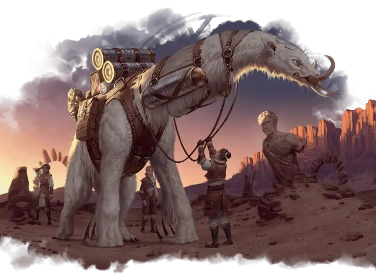

Реликтовый ленивец
Relic Sloth
Огромный Зверь, без мировоззрения

Класс Доспеха 13 (природный доспех)
Хиты 76 (8к12 + 24)
Скорость 20 футов, лазая 20 футов
| мод | спас | ||
|---|---|---|---|
| СИЛ | 20 | +5 | +5 |
| ЛОВ | 9 | −1 | −1 |
| ТЕЛ | 17 | +3 | +3 |
| мод | спас | ||
|---|---|---|---|
| ИНТ | 2 | −4 | −4 |
| МДР | 12 | +1 | +1 |
| ХАР | 8 | −1 | −1 |
Навыки Восприятие +3
Чувства пассивное Восприятие 13
Опасность 2 (450 опыта)
Бонус мастерства +2
Действия
Когти. . Рукопашная атака оружием: +7 к попаданию, досягаемость 10 футов, одна цель. Попадание: 14 (2к8 + 5) рубящего урона, и цель схвачена (Сл высвобождения 15). Реликтовый ленивец может одновременно держать в захвате не более двух целей.
Реакции
Медленный, но устойчивый. Когда реликтовый ленивец подвергается воздействию, которое перемещает его из его текущего пространства или сбивает с ног, он не перемещается и не сбивается с ног.
Описание
Для длительных экспедиций маги Лорхолда часто используют реликтовых ленивцев, чтобы таскать снаряжение для приключений и найденные артефакты — до тех пор, пока их изучение не требует особой спешки. Реликтовые ленивцы передвигаются мучительно медленно, обдумывая каждый шаг и двигаясь только при необходимости. Но эта осторожность делает этих неуклюжих существ идеальными для преодоления опасных и разрушающихся руин, где другие вьючные животные оступились бы. Характерные серповидные когти на передних конечностях реликтового ленивца в основном используются для лазания, хотя в крайнем случае они могут отбиться от голодного хищника.